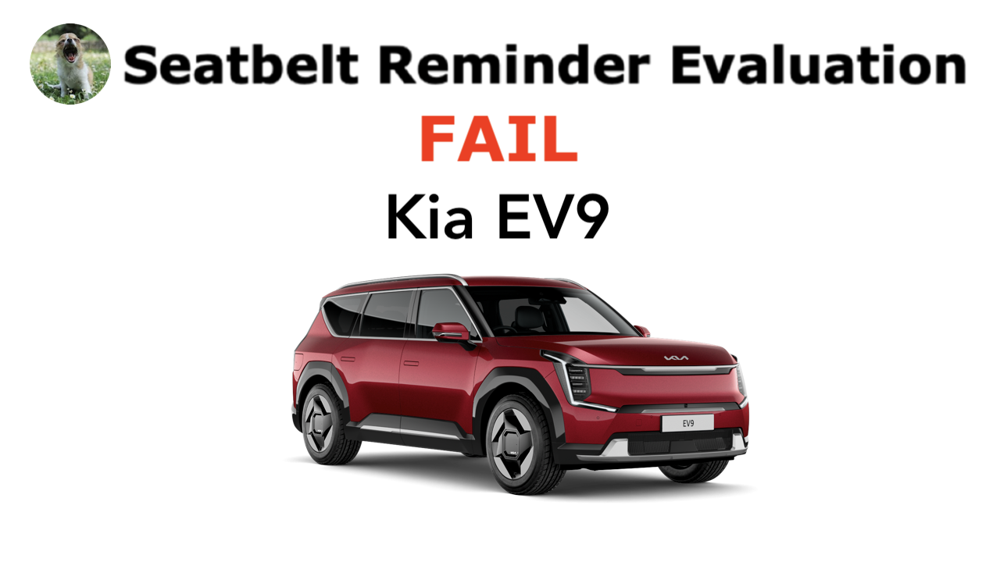

The Yawning Chihuahua
Home | Seatbelt reminder evaluation | Twitter | Instagram | YouTube | Legacy website

Kia EV9 (India) |
||||
|---|---|---|---|---|
| Behaviour of second-level warning in the 2nd-row outboard seats | ||||
| Testcase | Description | Acoustic signal | Visual signal | Verdict |
 |
occupant does not fasten seatbelt | NO | YES | NOT OK |
 |
occupant takes off seatbelt | YES | YES | OK |
 |
seatbelt not fastened on an empty seat | NO | YES | NOT OK |
 |
seatbelt taken off on an empty seat | YES | YES | NOT OK |
| FAIL | ||||
Kia EV9 (Europe, Australia, and New Zealand) |
||||
|---|---|---|---|---|
| Behaviour of second-level warning in the 2nd-row outboard seats | ||||
| Testcase | Description | Acoustic signal | Visual signal | |
|
occupant does not fasten seatbelt | YES | YES | |
|
occupant takes off seatbelt | YES | YES | |
|
seatbelt not fastened on an empty seat | NO | NO | |
|
seatbelt taken off on an empty seat | NO | NO | |